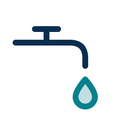
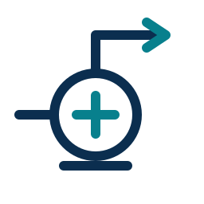
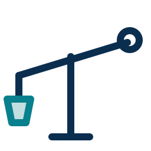
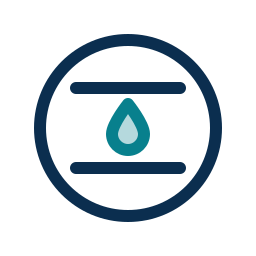
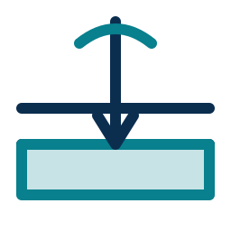

Survey-led. Standards-driven. Community-first.
Survey-led
We find the water before we build, with a registered hydrogeologist, and we keep the evidence.
Standards-driven
Permitted specialists, honest records, a written warranty and a service tag on every system.
Community-first
Local jobs, training and mentorship, and respect for every community we work in.
What we do

Bathroom and kitchen repairs
Pumps and pumping systems Pipes, all sizes Tanks and solar plants Stones and materials Wiring for water systems
Water-lift systems and drainage
Septic tanks and soak pits Farm sprinklers and spray
Shark Water SurveyHow we work
Built on field experience, measured in livelihoods.
villages travelled by our founder, Hassan Maweje.
on every field photograph, so you can check us.
livelihoods is our five-year target, reported openly every year.
† Founder-reported. Supporting field records are being compiled.
See what we build, with the place and date.
Every project on our Our Work page is shown with its location, date and status, so you can verify it.
For districts, companies and NGOs
Start with a small, verifiable pilot: a survey of villages, a written report and map, and shared data.
Partner with usQuestions we are asked
What size water tank do I need?
Multiply the number of people, the litres each person uses a day, and the days of storage you want. Tell us your numbers and we will size it for you.
Why survey before drilling a borehole?
A survey shows where water is most likely to be found, so you avoid drilling in the wrong place. Shark works with a registered hydrogeologist and manages the process.
Who drills the borehole?
Borehole drilling is done by a drilling contractor registered with the water ministry. Shark manages the project for you until it holds its own registration.
How do I get a quotation?
Message us on WhatsApp. We arrange a site visit and send a written quotation after it.
Ready to book a site visit?
Tell us where you are and what you need. We reply within 15 minutes in working hours.
Chat on WhatsAppCall 0756 191 226